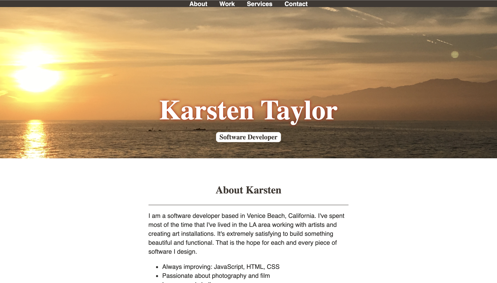

About me
I am a software developer based in Venice Beach, California. I've spent most of the time that I've lived in the LA area working with artists and creating art installations. It's extremely satisfying to build something beautiful and functional. That is the hope for each and every piece of software I design.
- Always improving: JavaScript, HTML, CSS
- Passionate about photography and film
- Love a good challenge
- Looking forward to working with skilled programmers
I believe that anything worth doing is worth doing well. I do my best to apply this to every aspect of my life as well as my work. My goal is to walk away from each finished project knowing that it was my best work yet.
My Work
I am always adding to the projects that I have worked on, but these are a few examples of what I have done so far:
Click HERE to see samples of my work.
Or you can follow the Github link: https://karstentaylor.github.io/webportfolio/
Here is a quick peep at one portfolio page I built for web development. I created this webpage as a starter portfolio for myself for web development. In this project I learned how to use HTML and CSS in a more complete way to make a page with different fonts and colors. My goal in this project was specifically to work with color matching, so that the background colors matched some of the colors from the background photo. I felt like this would be more visually pleasing.
Karsten's Services
This is my wish list of what I hope to be able to provide to future clients:
- Visually pleasing products
- Functional and user friendly software
- Creative solutions to potential problems
Contact
If you are interested in more of my work please fill out the following form to request more information.
I am always interested in taking on exciting new projects. If you have a need for a developer like me then feel free to contact me. I am easily reached at the following e-mail address: